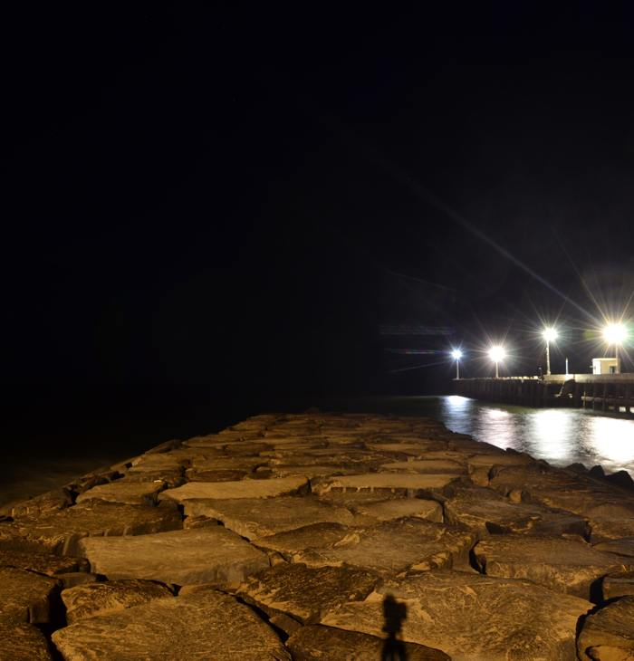
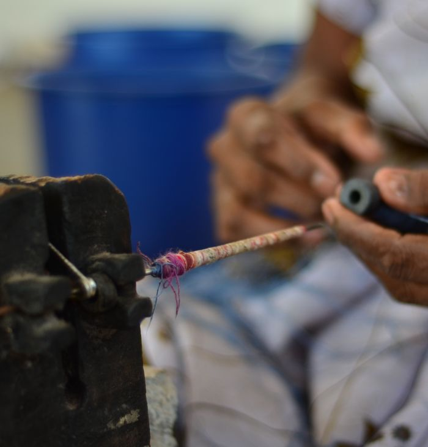
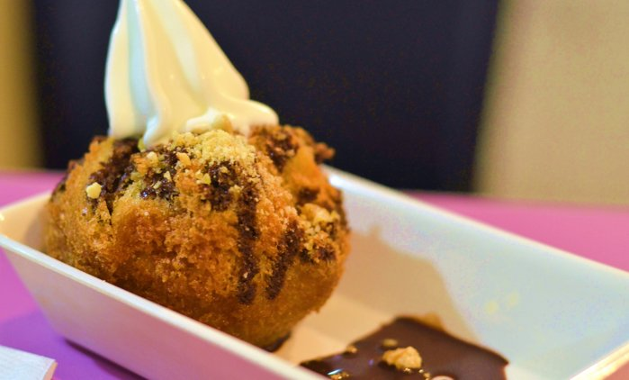
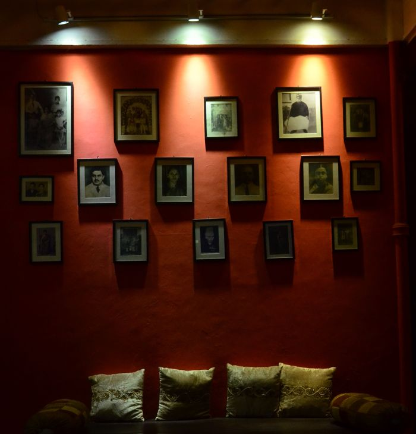

PLACES TO VISIT
Formerly known as Pondicherry is a Union Territory of India. As a traveller there are many fun things to do in Pondicherry, which includes a sightseeing tour to the Aurobindo Ashram in Auroville, the three beaches – Serenity, Quiet and Reppo, near the town, the French Institute with some of the rare old French books, the Botanical Gardens and the Pondicherry Museum, to name a few. Some prominent churches to see in Pondicherry are the Sacred Heart Church and Our Lady of the Immaculate Conception. There are also many temples around Pondicherry where one can pay their visits.
| Places To Visit | Visiting Time | Cost | Related Links | Locate On Google Maps |
|---|---|---|---|---|
| Promenade Beach | 4 am till midnight | Free | virtualtourist.com | Locate |
| Auroville | 9 am till 4pm | On booking, but free | Auroville Website | Locate |
| Serenity Beach | 4 am till 6pm | Free | tripadvisor.in | Locate |
| Paradise Beach | 9 am till 5 pm | Varies between Rs.120-250 per person | pondytourism.in | Locate |
| The Basilica Of The Sacred Heart of Jesus – Church | Not specified | Free | Wikipedia | Locate |
| Le café | 24 hours | Fair | Zomato.com | Locate |
| French War Memorial | 24 hours | Free | Wikipedia | Locate |

SHOPPING
Shopping in Pondicherry is all about buying bags and footwear made out of leather. Visitors could miss out a lot of shopping if they are unable to visit Puducherry and Auroville. You can buy the most exquisite gift items ranging from Southern silks and fabrics to hand-made clay and metal pendants to leather key rings and a whole range of incense sticks and aroma candles.
While the gift shops and the ashram stores feature great home decor items and junk jewellery, the Auroville shops and boutiques are complete with artistic and intricate work handicrafts made by the people who live and work in the Aurobindo Ashram. The main Puducherry beach is a host to big and small stores for buying curios and other gift items.

PLACES TO EAT
Pondicherry is known for its food. Naturally. The French have an ancient culinary tradition that married with local cuisines to create what one writer calls a "mosaic of culinary integration". Pondicherry is the one place in India where one can buy bona fide French baguettes, brioches and pastries. Those apart, local restaurants specialise in good French food that is served up along side Tamil, Malayalam, Telugu, Bengali, Gujarati and Punjabi cuisines.
| Name | Type of Cuisine | Approx Cost for Two | Rating | Locate On Google Maps |
|---|---|---|---|---|
| Akbar Biryani | North Indian, Mughlai | 500 | * * * * * | Locate |
| Eden Garden | Desserts, Snacks | 350 | * * * * * | Locate |
| Café Xtasi | Italian, Snacks | 700 | * * * * | Locate |

PLACES TO STAY
Puducherry offers a wide choice of places to stay as the accommodation options range from deluxe to budget hotels and lodges. If you are looking for a comfortable stay at a deluxe hotel then choose to stay in The Dune, Big Beach, Promenade, Pondicherry Ashok or Le Dupleix. These hotels feature all modern amenities to make your holiday unforgettable.
The mid-range hotels in Puducherry include properties like Velvet Villa is one of the best situated place to stay with your family or friends. Gives a very friendly behavior to the visitors and is very near to almost all the tourist places in the town.